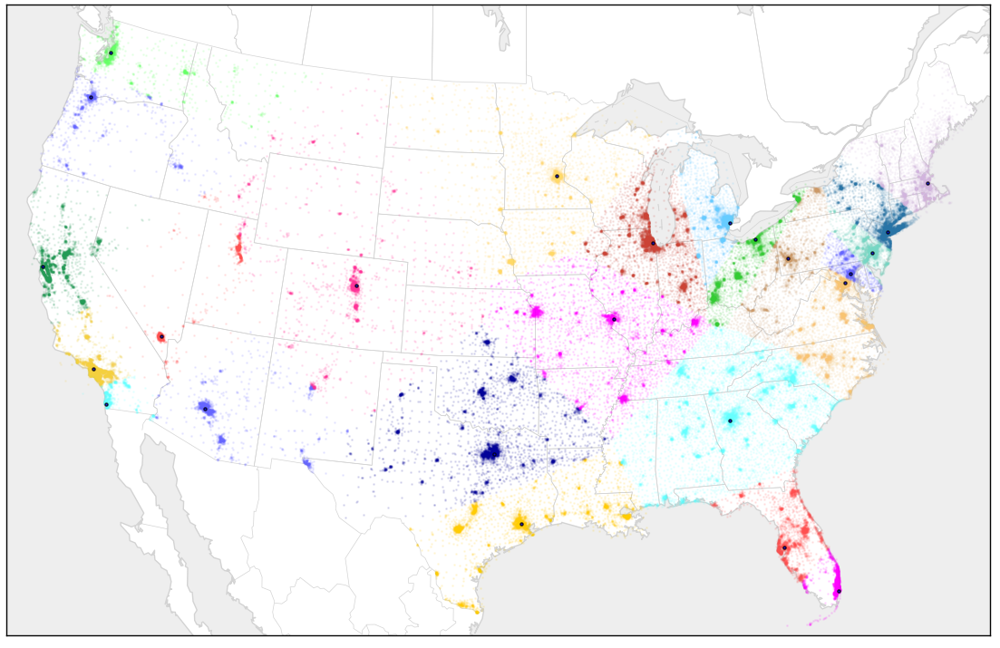
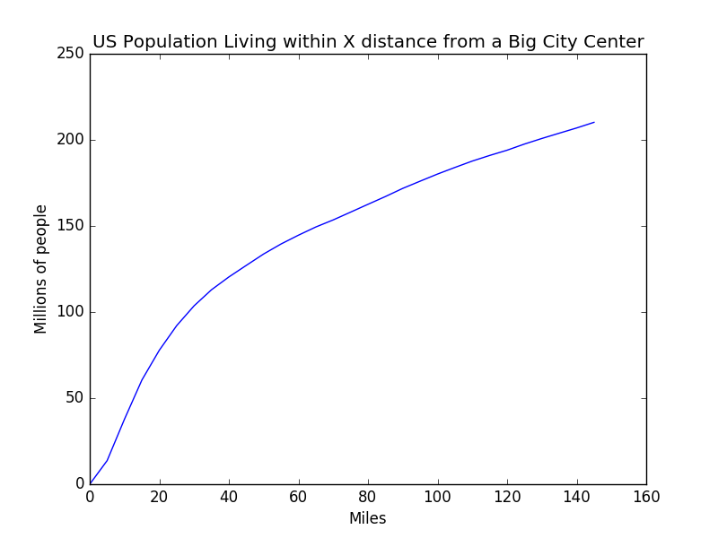

Took the 24 largest US cities (each has a big black dot) and then color US census tract based on what city they'r closest to. All the ones closer to San Francisco than any other city get green, Portland purple, etc.
below is a graph of population living at X distance from the centers of those 24 largest cities
